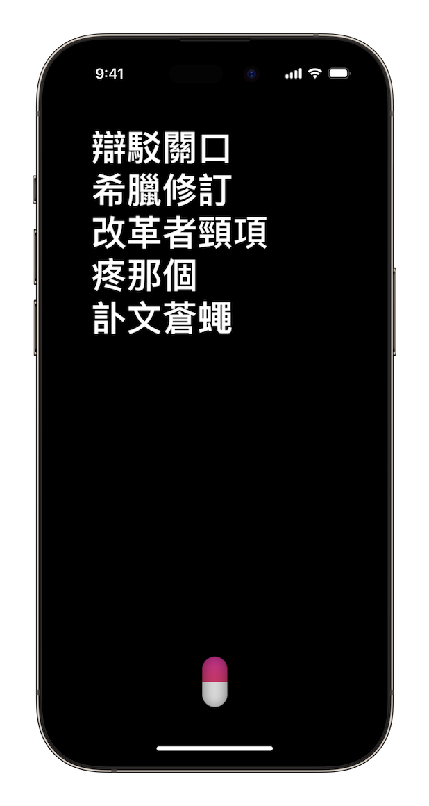
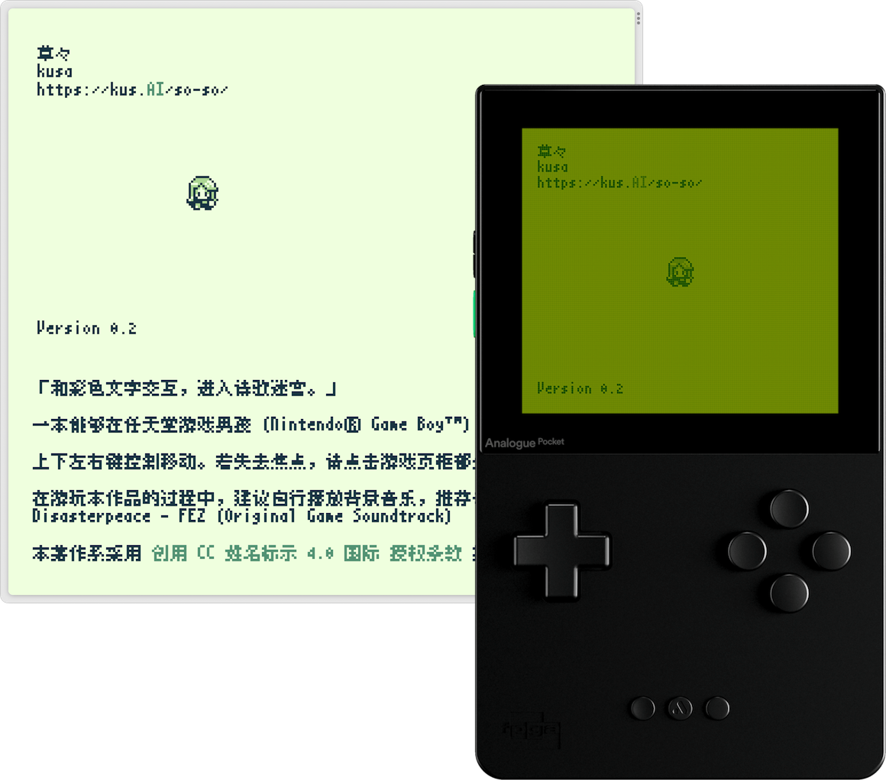
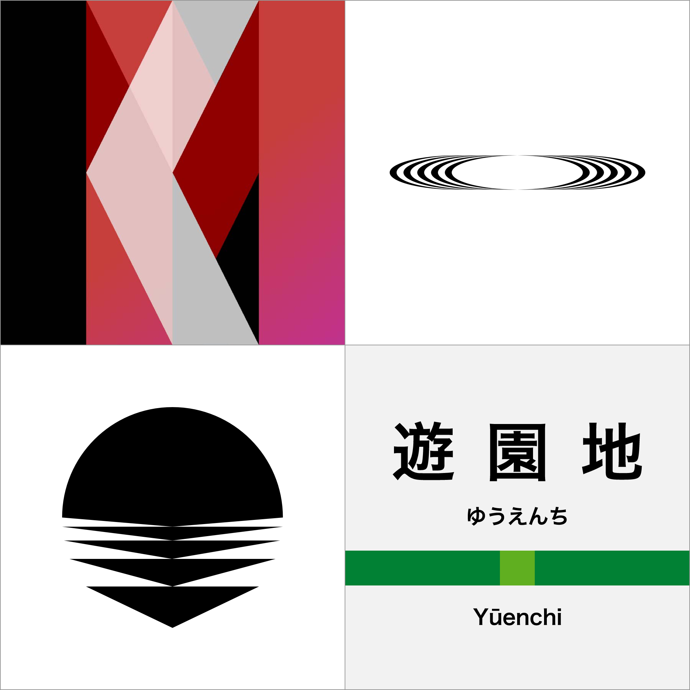
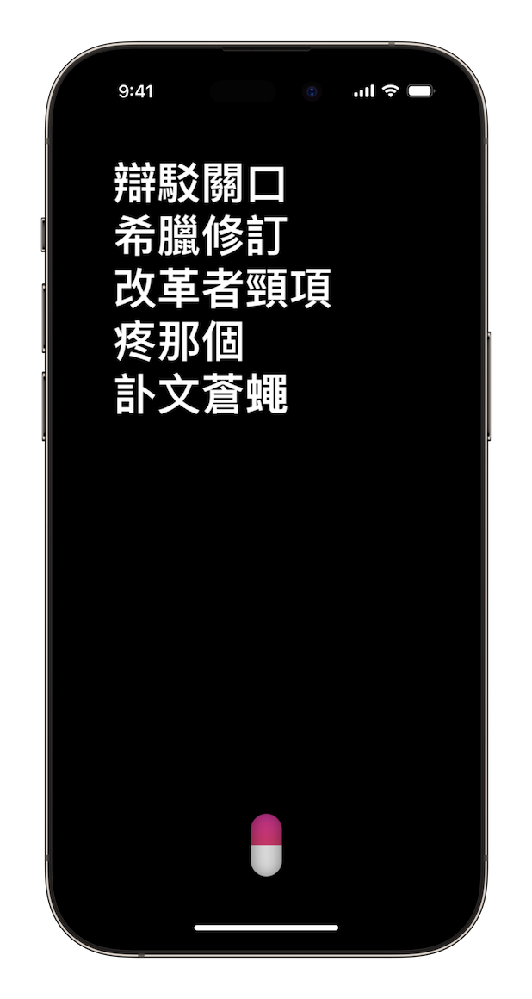
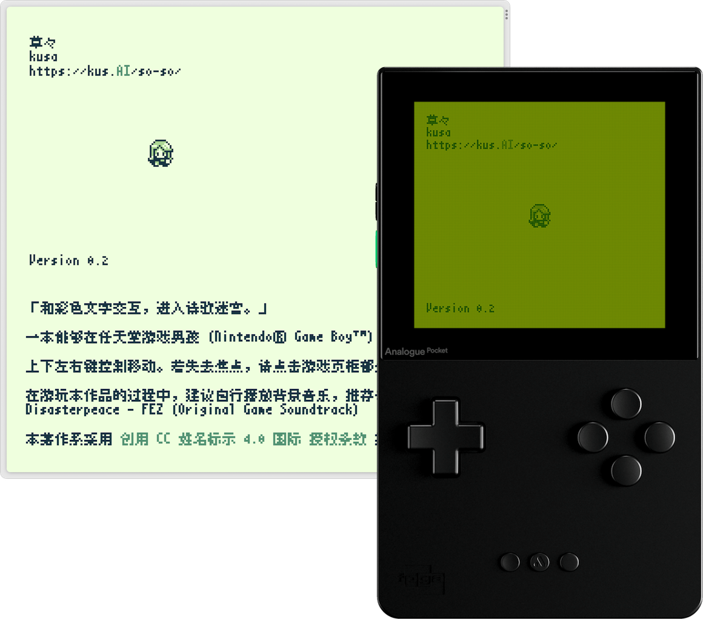
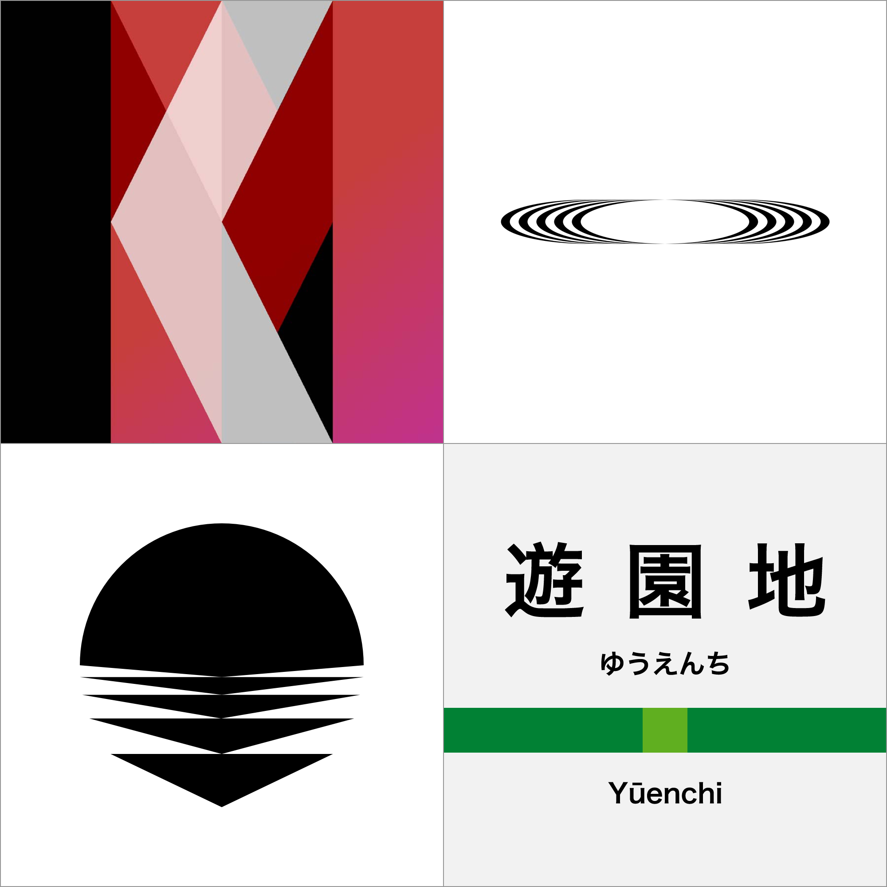

張苦洒行天者，北京人也。業軟體工程師，自謂獨立開發者，好藝術及設計也。
作白話文，惟苦洒矣。
會諸此後設詩篇。
軟體工程師
苦洒業於豆瓣，任後端工程師，作業主以蟒語。
獨立開發者
苦洒事蘋果開發，設計創新軟體。其有《粉丸》，隨機作詩器也。
複刻《粉丸》以網頁，開其源也。
藝設生徒
苦洒多作新詩，好數字藝術，喜圖形設計。自印詩集數冊，形制不一。今作《草々》，可賞玩其詩於任天堂遊郎機也。
至於設計，作徽，一予其學院，一遺其友。
張苦洒行天者，北京人也。業軟體工程師，自謂獨立開發者，好藝術及設計也。
作白話文，惟苦洒矣。
會諸此後設詩篇。
苦洒業於豆瓣，任後端工程師，作業主以蟒語。
苦洒事蘋果開發，設計創新軟體。其有《粉丸》，隨機作詩器也。
複刻《粉丸》以網頁，開其源也。
苦洒多作新詩，好數字藝術，喜圖形設計。自印詩集數冊，形制不一。今作《草々》，可賞玩其詩於任天堂遊郎機也。
至於設計，作徽，一予其學院，一遺其友。
